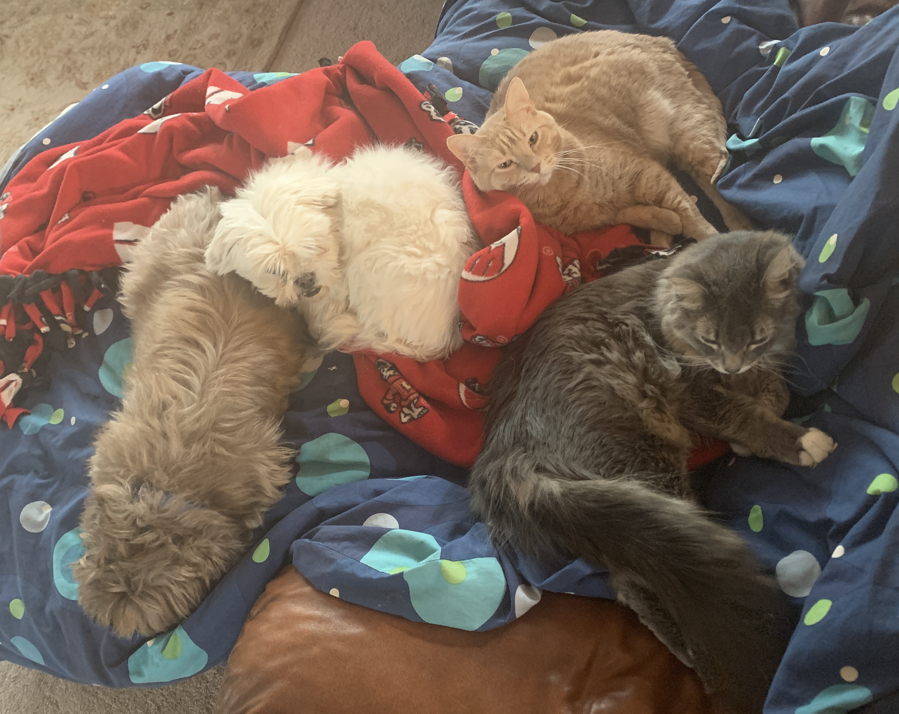

My name is Nicholas Wright and I am currently a sophomore at UW-Madison! As a biology student, I am hoping to attend medical school. Some of my hobbies include spending time with friends, watching movies, hiking, and reading!
I am originally from Eagan, Minnesota. Back home, my family has two dogs and two cats - one of which is named after Bucky Badger! I have three brothers, including a twin brother. Interestingly enough, all of my brothers and I have or are attending UW-Madison! In fact, my older brother is in LIS351 with m.
Harry Potter follows the story of a lightning-scarred boy as he faces the trifles of not only growing up, but also having to deal with a destiny out of his hands. This story is a bildungsroman, or coming-of-age story, and I grew up right alongside Harry! Thus, I definitely relate to this character in a multitude of ways. Besides Harry, himself, the different characters in this story have each taught me so much, especially his best friends Ron Weasley and Hermione Granger.
Stemming from my love of movies and books, I am thoroughly obsessed with the magical world of J.K. Rowling's Harry Potter! I even brought the entire book series and a wand with me to school. Overall, this series has changed my life drastically, and I do not know who I would be today without it.

This website takes a more in-depth look at some different characters in Harry Potter and how they affected me. Each character page offers information about:
The characters featured on this website include:
To explore this world more, visit the official website for the series: https://www.wizardingworld.com